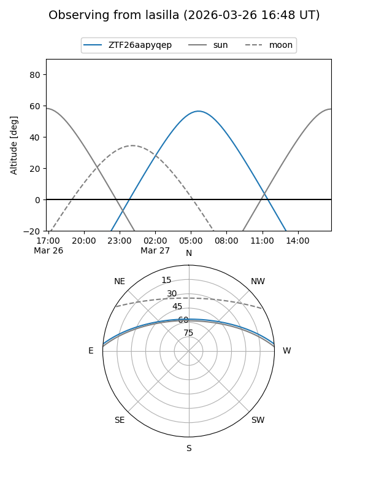
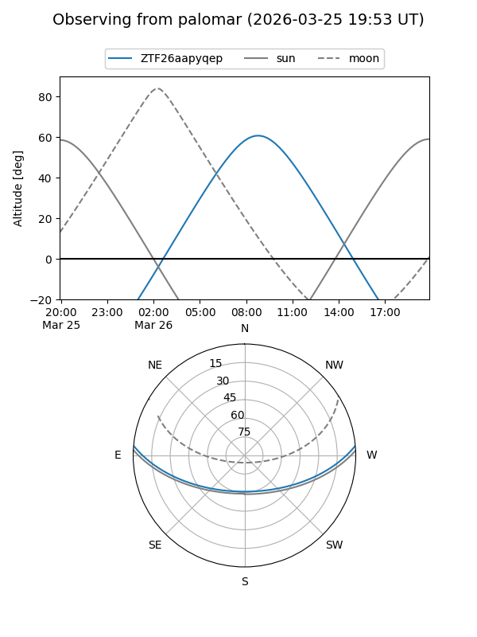

ZTF26aapyqep
Target ZTF26aapyqep at 2026-03-26 09:29
Aliases and brokers:
FINK: link
Lasair: link
ALeRCE: link
alt names
ZTF26aapyqep (ztf,fink_ztf)
Coordinates:
equatorial (ra, dec) = 198.2780,+4.30465
equatorial (HMS+DMS) = 13:13:06.72,+04:18:16.72
galactic (l, b) = (316.6460,+66.59756)
Flags:
Photometry:
last ztfg=20.06
1 ztfg detections
Lightcurve
Visibility


Additional plots